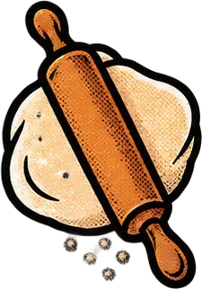
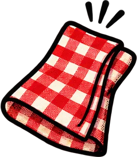
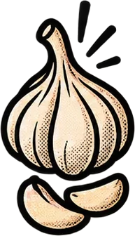
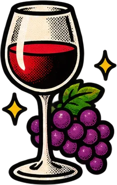
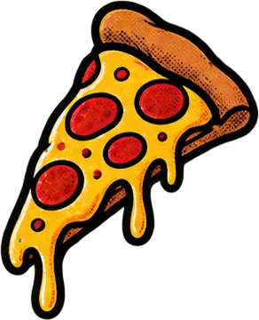

01Tarjeta que se voltea
Para: mostrar dos caras de algo. Pasa el ratón.
Hoy en el menú: márgenes y rellenos bien hechos, el modelo de caja, overflow, tablas, inline-block, contadores, @property, listas que aparecen solas y las recetas de maquetación de siempre. De postre, 50 efectos listos para copiar. Todo con HTML y CSS, sin una sola línea de JavaScript.
La masa de toda maqueta. Ya sabes qué son; aquí van los detalles que dan problemas.

El padding es el relleno dentro de la caja (se pinta con su fondo) y el margin es el espacio fuera (siempre transparente). El orden del atajo es el de las agujas del reloj: arriba, derecha, abajo, izquierda. Lo tienes explicado paso a paso en «Textos y macedonia»; aquí vamos a los detalles.
Por defecto, si a una caja de width: 200px le pones padding: 20px y un borde de 5px, mide 250px: el relleno y el borde se suman al ancho. Con box-sizing: border-box el ancho incluye relleno y borde: mide 200px pase lo que pase. Por eso casi todas las webs lo ponen a todos los elementos.
Un padding o un margin en % se calcula sobre el ancho del padre, también los de arriba y abajo. padding-top: 10% no es el 10 % del alto, es el 10 % del ancho. Hoy, para mantener una forma, usa aspect-ratio (lo viste en imágenes).
En una fila de Flex, un hijo con margin-left: auto se queda con todo el espacio libre a su izquierda: se va al otro extremo. Es el truco de los menús con el logo a un lado y los enlaces al otro.
¿No sabes por qué una caja se sale o de dónde sale un hueco? Pon un contorno a todo. Usa outline y no border: el contorno no ocupa espacio, así que no cambia la maqueta mientras investigas.
* { outline: … } en cuanto encuentres el fallo: es una herramienta de depuración, no de diseño. En DevTools tienes lo mismo pasando el ratón por el panel Elements.Antes de cocinar, se limpia la cocina.
Cada navegador trae su propia hoja de estilos: los h1 tienen márgenes, el body tiene 8px de margen, las listas tienen relleno… y no son exactamente iguales en Chrome, Firefox y Safari. Hay dos formas de empezar desde una base conocida:
| Estrategia | Qué hace | Cuándo |
|---|---|---|
| reset | borra márgenes y rellenos de todo: partes de cero | cuando lo diseñas todo tú |
| normalize.css | no borra, iguala: todos los navegadores muestran lo mismo | cuando quieres mantener los estilos por defecto razonables |
<link rel="stylesheet" href="https://cdn.jsdelivr.net/npm/normalize.css@8.0.1/normalize.min.css">. Después, tus estilos.Los márgenes verticales de cajas en flujo normal se funden: no se suman, gana el mayor. Pasa en tres casos:
margin-bottom de uno y el margin-top del siguiente.margin-top del primer hijo «se escapa» por encima del padre (el padre baja con él).Las dos cajas rojas tienen un hijo con margin-top: 30px. En la primera, el margen sale fuera y la caja roja baja. En la segunda, display: flow-root lo mantiene dentro.
Dentro de un contenedor con display: flex o display: grid los márgenes nunca colapsan. Y si separas los hijos con gap en lugar de márgenes, te olvidas del tema para siempre.
Demasiados espaguetis para un plato tan pequeño.
| Valor | Qué pasa con lo que sobra |
|---|---|
| visible | se sale de la caja y se ve encima de lo demás (por defecto) |
| hidden | se corta; se puede mover con código, pero el usuario no ve barra |
| clip | se corta del todo (como hidden, pero ni siquiera se puede desplazar) |
| auto | aparece una barra de desplazamiento solo si hace falta |
| scroll | la barra está siempre, haga falta o no |
Puedes controlar cada eje por separado: overflow-x (horizontal) y overflow-y (vertical).
El patrón de las filas de categorías en el móvil: los elementos no bajan de línea y la fila se desplaza de lado.
No pongas overflow-x: hidden en el body para «arreglar» que la página se mueva de lado en el móvil: escondes el síntoma, no la causa. Busca qué elemento es demasiado ancho (con el truco del outline) y arréglalo.
La carta de precios: limpia en el ordenador y sin romperse en el móvil.

border-collapse: collapse: une los bordes de las celdas en una sola línea (por defecto, cada celda tiene su borde y quedan dobles).padding en th y td: aire dentro de cada celda.tr:nth-child(even): las filas pares de otro color (el efecto «cebra»), que ayuda a seguir la fila con la vista.div con overflow-x: auto: en el móvil la tabla se desplaza de lado en vez de romper la página.Las tablas son para datos (precios, horarios, notas), nunca para maquetar una página: para eso tienes Flex y Grid. Usa <caption>, <thead> y <th>: los lectores de pantalla las leen mucho mejor.
Lo mejor de dos mundos: va en la línea del texto y se deja medir.

| display | ¿En la misma línea? | ¿Acepta width y height? | ¿Margin y padding verticales? |
|---|---|---|---|
| block | No: ocupa toda la fila | Sí | Sí |
| inline | Sí | No (los ignora) | No empujan a las líneas de alrededor |
| inline-block | Sí | Sí | Sí |
Entre dos elementos inline-block aparece un hueco de unos 4px: es el espacio en blanco (el salto de línea) que hay entre ellos en el HTML, que se trata como un espacio de texto.
transform funcione en un span. Para filas y rejillas de cajas, Flex y Grid son mejores.CSS sabe contar: pasos de una receta, capítulos… e incluso casillas marcadas.
counter-reset: paso; en el padre: crea un contador llamado paso que empieza en 0.counter-increment: paso; en cada hijo: suma 1 cada vez que aparece.content: counter(paso); en un ::before o ::after: escribe el número.counter(paso, upper-roman) escribe I, II, III…; también hay lower-alpha (a, b, c), decimal-leading-zero (01, 02)… Y con counters(nombre, ".") los contadores anidados se escriben juntos: 1.1, 1.2, 2.1…
El contador solo suma en las casillas :checked, y el total se escribe en un elemento que va después de todas ellas.
El contador solo puede escribirse en elementos que van después de los que cuentan. Por eso el total está al final. Y el número va en content: los lectores de pantalla lo leen, pero no se puede copiar ni seleccionar como texto normal.
El temporizador del horno, con una variable que avanza sola.
Para el navegador, --progreso: 30% es solo un texto: no sabe que es un porcentaje, así que no puede calcular 31 %, 32 %… y al animarla salta de golpe. Con @property le dices el tipo y entonces sí lo interpola.
| Parte | Significa |
|---|---|
| @property --progreso | el nombre de la variable |
| syntax: "<percentage>" | su tipo: <number>, <integer>, <length>, <angle>, <color>… |
| inherits: false | si los hijos heredan su valor |
| initial-value: 0% | el valor de partida (obligatorio) |
Funciona en Chrome, Edge, Safari y Firefox desde 2024. Si un navegador no lo entiende, la variable cambia de golpe en lugar de suave, pero nada se rompe.
Cada plato llega a la mesa un poco después que el anterior.

Para que los elementos de una lista aparezcan en cascada, cada uno necesita un retraso distinto. Hasta ahora lo hacíamos escribiendo su número en el HTML (style="--i: 2") y multiplicando. La función nueva sibling-index() calcula ese número sola: el primer hermano vale 1, el segundo 2…
El HTML queda limpio, sin --i. Si el navegador no conoce sibling-index(), todos aparecen a la vez: el contenido siempre se ve.
sibling-index() y su compañera sibling-count() (cuántos hermanos hay en total) funcionan en Chrome y Edge desde la versión 138. Safari y Firefox todavía no: por eso siempre dentro de @supports y con una versión que funcione sin ellas.La pregunta más famosa de CSS, contestada cinco veces.

| Receta | Dónde se escribe | Úsala cuando… |
|---|---|---|
| 1 · grid + place-items | padre | quieres lo más corto (la favorita) |
| 2 · flex + justify + align | padre | el padre ya es Flex por otro motivo |
| 3 · margin: auto | hijo (padre Flex o Grid) | solo un hijo debe centrarse |
| 4 · absolute + inset: 0 + margin: auto | hijo con tamaño | el hijo flota sobre otra cosa |
| 5 · absolute + 50 % + translate | hijo | el hijo flota y no sabes su tamaño |
La portada que ocupa justo toda la pantalla al entrar.
min-height: 100dvh. La unidad dvh descuenta las barras del navegador del móvil, que con vh tapaban el final de la portada. Pon antes 100vh como respaldo para navegadores antiguos.background-size: cover y background-position: center.background).display: grid + place-items: center.Con una fotografía usa background-size: cover en vez de repetirla: la imagen cubre toda la portada recortando lo que sobra. Y elige una imagen ligera (WebP): es lo primero que se descarga.
Tarjetas que se voltean, menús, carruseles sin salto, botones, galerías, formularios y más. Sin JavaScript.
@media (prefers-reduced-motion: reduce).Para: mostrar dos caras de algo. Pasa el ratón.
Para: rejillas de platos o productos. Pasa el ratón.
Para: destacar una tarjeta especial. Pasa el ratón.
Para: galerías y portfolios. Pasa el ratón.
Para: el plan o el plato estrella. Usa @property.
Para: enseñar una colección. Pasa el ratón.
Para: tarjetas regalo o cupones. Pasa el ratón.
Para: tablas de precios: la del centro, más grande y con etiqueta.
Para: submenús. Pasa el ratón o llega con Tab.
Para: el menú del móvil. Haz clic en las tres rayas.
Para: preguntas frecuentes. Haz clic en una pregunta.
Para: cambiar de contenido sin recargar. Haz clic en las pestañas.
Para: la barra de navegación. Pasa el ratón por los enlaces.
Para: carritos o filtros que entran desde un lado. Haz clic en el botón.
Para: webs con muchas secciones. Pasa el ratón por «Carta».
Para: galerías que pasan solas. El secreto: el contenido duplicado, margin en vez de gap y mover -50 %.
Para: «Nuestros proveedores». Se para al pasar el ratón.
Para: pasar fotos con el dedo o la rueda: cada una se para justo en su sitio.
Para: diapositivas con puntos para elegir. Haz clic en los puntos.
Para: pedidos o reseñas que suben solos.
Para: listas horizontales con barra bonita. Desplázala.
Para: botones con borde. Pasa el ratón.
Para: el botón más importante de la página.
Para: sensación de botón físico. Púlsalo.
Para: «Siguiente» o «Ver carta». Pasa el ratón.
Para: botones elegantes sin relleno. Pasa el ratón.
Para: botones de portada con color.
Para: respuesta visual al clic. Mantén pulsado.
Para: llamar la atención sin molestar.
Para: galerías: la imagen crece sin salirse. Pasa el ratón.
Para: logos de clientes, equipos. Pasa el ratón.
Para: fondos de portada que parecen vídeo.
Para: ver una imagen en grande. Pulsa la miniatura y luego la ×.
Para: fotos en fila: la que señalas se ensancha. Pasa el ratón.
Para: descubrir una imagen. Pasa el ratón.
Para: formularios limpios: la etiqueta sube al escribir. Escribe en el campo.
Para: ajustes de sí o no. Haz clic.
Para: casillas con el estilo de tu web. Haz clic.
Para: elegir una opción entre pocas. Haz clic.
Para: validar sin JavaScript. Escribe algo que no sea un correo y sal del campo.
Para: puntuar un plato. Haz clic en una estrella.
Para: titulares de portada.
Para: titulares llamativos.
Para: enlaces dentro del texto. Pasa el ratón.
Para: webs gamberras o de música.
Para: destacar la frase clave.
Para: explicar un icono. Pasa el ratón o llega con Tab.
Para: marcar novedades en una tarjeta.
Para: mientras se prepara el pedido.
Para: fondos con sabor a trattoria, sin imágenes: dos degradados cruzados.
La cuenta, por favor: todas las preguntas juntas, con su explicación.